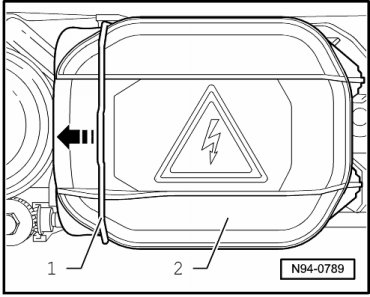
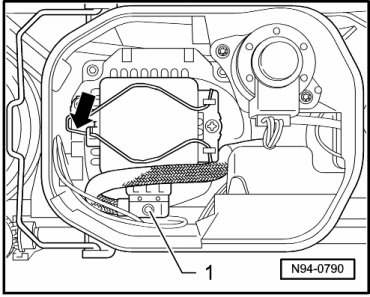

HID Bulb
HID Headlamps, through 11.06
HID Bulb
CAUTION!
Note usage and safety notes for gas discharge headlamps --> [ HID Headlamps Safety Precautions ] HID Headlamps Safety Precautions
• Left High Intensity Gas Discharge (HID) Lamp (L13) and Right High Intensity Gas Discharge (HID) Lamp (L14) can be checked via output Diagnostic Test Mode (DTM) of Vehicle Electrical System Control Module (J519) --> [ Vehicle Electrical System Output Diagnostic Test Mode ] Initial Inspection and Diagnostic Overview.
• Illustrations depict replacement of gas-discharge headlamp at left headlamp.
• Replacement of Left High Intensity Gas Discharge (HID) Lamp (L13) and Right High Intensity Gas Discharge (HID) Lamp (L14) is performed analogously.
Removing
- Switch off ignition, switch off all electrical consumers and remove ignition key.
- Remove headlamp --> [ Headlamps, through 11.06 ] Headlamps, through 11.06.
- Press wire bracket - 1 - to the side in - direction of arrow - and remove cover cap - 2 -.

CAUTION!
Note usage and safety notes for gas discharge headlamps --> [ HID Headlamps Safety Precautions ] HID Headlamps Safety Precautions
- Disconnect connector - 1 -.

- Compress and release the spring clip - arrow -.
- Carefully pull the gas-discharge bulb out of the socket.
Installing
Install in reverse order of removal, noting the following:
• Do not touch glass cone when installing gas-discharge lamp. Fingers leave traces of grease on glass cone which can evaporate when HID lamp is switched on and glass cone will cloud.
• Glass cone of gas-discharge lamp must not be under a mechanical strain of any kind. Glass cone is extremely sensitive and is also under high pressure.
• Avoid looking directly into focused light beam, since UV-radiation of gas-discharge lamp is approximately 2.5 times higher than that of standard Halogen lamps.
• When installing cap, ensure proper seating. It is destroyed by ingress of water into headlamp.
• If a headlamp with automatic vertical headlamp aim control is removed, basic setting of headlamps must always be performed after installation .
- Insert new HID lamp so that retaining tabs lie in cut-out in reflector.
- Attach the spring clip again.
- Connect the metal connector again.
- Check headlamp for function.
- Check and adjust headlamp aim if necessary .